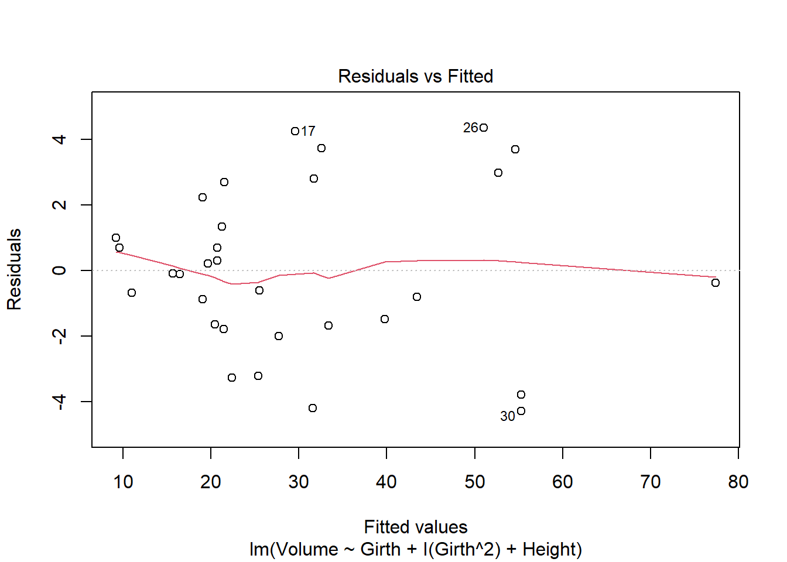

library(alr4)Loading required package: carLoading required package: carDataLoading required package: effectslattice theme set by effectsTheme()
See ?effectsTheme for details.library(smss)
library(stats)
library(tidyr)
library(ggplot2)library(alr4)Loading required package: carLoading required package: carDataLoading required package: effectslattice theme set by effectsTheme()
See ?effectsTheme for details.library(smss)
library(stats)
library(tidyr)
library(ggplot2)(Data file: house.selling.price.2 from smss R package)
For the house.selling.price.2 data the tables below (not included) show a correlation matrix and a model fit using four predictors of selling price: size (home and lot), # of bedrooms, # of bathrooms, and whether or not the house is new.
(Hint 1: You should be able to answer A, B, C just using the tables, although you should feel free to load the data in R and work with it if you so choose. They will be consistent with what you see on the tables.
Hint 2: The p-value of a variable in a simple linear regression is the same p-value one would get from a Pearson’s correlation (cor.test). The p-value is a function of the magnitude of the correlation coefficient (the higher the coefficient, the lower the p-value) and of sample size (larger samples lead to smaller p-values). For the correlations shown in the tables, they are between variables of the same length.)
data("house.selling.price.2")
names(house.selling.price.2) <- c('Price','Size','Bedrooms','Bathrooms','New')
summary(house.selling.price.2) Price Size Bedrooms Bathrooms
Min. : 17.50 Min. :0.40 Min. :1.000 Min. :1.000
1st Qu.: 72.90 1st Qu.:1.33 1st Qu.:3.000 1st Qu.:2.000
Median : 96.00 Median :1.57 Median :3.000 Median :2.000
Mean : 99.53 Mean :1.65 Mean :3.183 Mean :1.957
3rd Qu.:115.00 3rd Qu.:1.98 3rd Qu.:4.000 3rd Qu.:2.000
Max. :309.40 Max. :3.85 Max. :5.000 Max. :3.000
New
Min. :0.0000
1st Qu.:0.0000
Median :0.0000
Mean :0.3011
3rd Qu.:1.0000
Max. :1.0000 In backward elimination, the variable ‘bedrooms’ would be removed first as it has the highest p-value of the variables.
In forward selection ‘size’ would be added first as it has the lowest p-value at 0.
‘BEDS’ may have such a large p-value in the multiple regression model because of its relationship to ‘SIZE’ - the price of a house goes up as its size increases. The extent of the price increase would probably be affected by other variables such as ‘NEW’, since the age of a house also affects its price.
i. R^2
ii. Adjusted R^2
iii. PRESS
iv. AIC
v. BIC Backward elimination, forward selection, and stepwise regression point to one model: the one that excludes the variable ‘Bedrooms’. To confirm these findings, I’m going to compare the model without ‘Bedrooms’ to one that does.
fit_bedrooms <- lm(Price~.,data=house.selling.price.2)
fit_no_bedrooms <- lm(Price~.-Bedrooms,data=house.selling.price.2)Lets create functions to gather the information needed to move forward with the problem.
r_squared <- function(fit)+
summary(fit)$r.squared
adjusted_rsq <- function(fit)+
summary(fit)$adj.r.squared
press <- function(fit) {
pr <- residuals(fit)/(1-lm.influence(fit)$hat)
sum(pr^2)
}Now lets apply these to the two models (fit_bedrooms and fit_no_bedrooms).
bed_models <- list(fit_bedrooms, fit_no_bedrooms)
data.frame(bed_models = c('fit_bedrooms','fit_no_bedrooms'),
r_squared=sapply(bed_models,r_squared),
adjusted_rsq=sapply(bed_models, adjusted_rsq),
press=sapply(bed_models,press),
AIC=sapply(bed_models, AIC),
BIC=sapply(bed_models,BIC)) bed_models r_squared adjusted_rsq press AIC BIC
1 fit_bedrooms 0.8688630 0.8629022 28390.22 790.6225 805.8181
2 fit_no_bedrooms 0.8681361 0.8636912 27860.05 789.1366 801.7996For R^2 and Adjusted R^2, the larger the value, the more favorable it is. But for Press, AIC, and BIC the opposite is true: we want the smallest values we can get. With that in mind, the model ‘fit_no_bedrooms’ is more fitting as it has a higher Adjustred R^2 and lower values for Press, AIC, and BIC.
Based on the comparison above, I prefer the model with ‘BEDS’ excluded.
(Data file: ‘trees’ from base R)
(Data file: trees from base R) From the documentation: “This data set provides measurements of the diameter, height and volume of timber in 31 felled black cherry trees. Note that the diameter (in inches) is erroneously labeled Girth in the data. It is measured at 4 ft 6 in above the ground.”
Tree volume estimation is a big deal, especially in the lumber industry. Use the trees data to build a basic model of tree volume prediction. In particular:
data(trees)
tree_mrm <- lm(Volume~Girth+Height,data=trees)
summary(tree_mrm)
Call:
lm(formula = Volume ~ Girth + Height, data = trees)
Residuals:
Min 1Q Median 3Q Max
-6.4065 -2.6493 -0.2876 2.2003 8.4847
Coefficients:
Estimate Std. Error t value Pr(>|t|)
(Intercept) -57.9877 8.6382 -6.713 2.75e-07 ***
Girth 4.7082 0.2643 17.816 < 2e-16 ***
Height 0.3393 0.1302 2.607 0.0145 *
---
Signif. codes: 0 '***' 0.001 '**' 0.01 '*' 0.05 '.' 0.1 ' ' 1
Residual standard error: 3.882 on 28 degrees of freedom
Multiple R-squared: 0.948, Adjusted R-squared: 0.9442
F-statistic: 255 on 2 and 28 DF, p-value: < 2.2e-16par(mfrow=c(2,3))
plot(tree_mrm,which=1:6)
Looking at the above matrix, I do think it has some violations. For example, the red line in the first plot violates that linearity assumption since its u-shaped rather than straight. Let’s compare with a similar plot.
tree_d2 <- lm(Volume~Girth+I(Girth^2)+Height,data=trees)
plot(tree_d2,which=1)
Unlike the red line in the first plot of the initial matrix, this one does NOT violate the linearity assumption; this line is much straighter.
(Data file: florida in alr R package)
In the 2000 election for U.S. president, the counting of votes in Florida was controversial. In Palm Beach County in south Florida, for example, voters used a so-called butterfly ballot. Some believe that the layout of the ballot caused some voters to cast votes for Buchanan when their intended choice was Gore.
The data has variables for the number of votes for each candidate—Gore, Bush, and Buchanan.
data(florida)
fl_lrm <- lm(Buchanan~Bush,data=florida)
par(mfrow=c(2,3))
plot(fl_lrm, which=1:6)
In every plot in this matrix Palm Beach County is an outlier; it sits pretty far from all the other data points.
fl_log <- lm(log(Buchanan)~log(Bush), data=florida)
par(mfrow=c(2,3))
plot(fl_log, which=1:6)
This model didn’t change my initial opinion about Palm Beach County being an outlier, since that’s still the case. The only difference is that Palm Beach County appears to be less of an ourlier than it was in the first model.